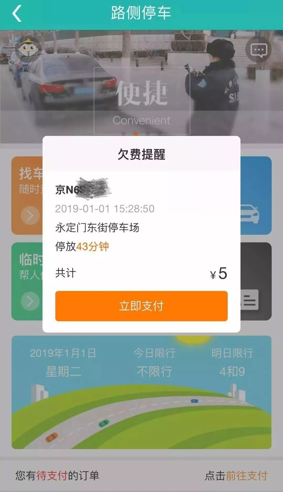
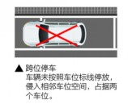

注意！东城区道路停车，必须学会这样缴费！
来源：北京东城
1月1日起，东城区、西城区和通州区全面实施道路停车电子收费，1.2万余个白实线停车位用于出行停车。在这些车位停车逾期未缴费，最高将被罚款1000元。
记者了解到，针对压线、跨位等违停行为，除了执法人员现场处罚外，高位视频等电子收费设备未来还将与“电子警察”联网，对违停车辆进行非现场处罚。
高位视频对车位覆盖率更高
昨天下午，记者在永定门东街至天坛东路路段看到，路南侧每隔几十米就设有一个白色的高位视频杆，高度与拍摄交通违法的电子眼差不多，视频杆上面各架设着一大一小两个摄像头，路旁立着一块醒目的橙色“P”字牌，上面标注着“电子收费停车场”及收费标准、收费单位等信息。
停车管理员告诉记者，一组高位视频设备可管8个停车位，这条路段共架设了20根视频杆，负责对126个车位进行电子收费拍照录入。与试点初期的地磁等电子收费设备相比，高位视频不仅对车位的覆盖率更高，且不容易受到人为破坏。
打开APP就有缴费提醒
记者驾车驶离永定门东街的白实线停车位后，打开已经完成车辆绑定的“北京交通”APP，进入“路侧停车”页面后立即跳出了“欠费提醒”，上面提示着车辆停放路段、时间及需要支付的价钱。点击“立即支付”即可通过支付宝、微信或一网通三种渠道进行支付。
记者了解到，电子收费车位停车，现场不再有人工收费，停车人不要将停车费交给任何现场人员，也不要扫任何人出示的二维码付费。停车人可通过“北京交通”APP和“北京交通”微信公众号、微信和支付宝“城市服务”，使用微信、支付宝、一网通等多种方式支付停车费。如果停车人发现计费误差等问题，可通过交通服务热线12328进行反映。
需要提示的是，白实线车位的缴费期限为停车人驶离车位30日内依法合规足额缴纳道路停车费。逾期未缴费的，依据《北京市机动车停车条例》有关规定，由区停车管理部门催缴停车费，并视情节轻重对停车人处以200元或500元至1000元罚款。
停车人也可现金缴费，东城区、西城区和通州区47个街道办服务窗口和全市22个ETC充值网点提供现金代缴服务。在线缴费和现金缴费，均可开具财政监制的电子票据。
道路停车标志科普
在此次道路停车改革中，将道路停车位分为白实线停车位和白虚线停车位。白实线停车位主要用于出行停车，将实行电子收费；白虚线停车位用于周边居民经认证车辆的居住停车，实行自治管理，趸交收费。
此外，还有用于出租车停放的蓝实线道路停车位，以及限制停放时长的蓝虚线道路停车位。
四类停车位标线——
白实线道路停车位
白虚线道路停车位
蓝实线道路停车位
蓝虚线道路停车位（限时长）
其中，限制停放时长的蓝虚线道路停车位，主要划设在学校及住宅周边，有的限停15分钟以内，有的标注“19时至次日7时准许停车”，市民在限时车位停车时，要看好停车位地面及“P”字牌上的标注。
禁止停车标线——
据统计，三个区按照标准规范，重新梳理规划、施划了1.2万余个白实线停车位，更换了收费公示牌，并安装了高位视频前端设备，实现电子收费系统与财政票据系统的衔接。
明码标价牌——
也就是说，车主可以通过地面施划的白实线、橙色电子收费公示牌及电子收费设备三个特征，寻找和辨别道路停车电子收费车位。
相关提醒
1、外来车停白虚线车位属违停
记者从市交通委获悉，此次道路停车改革中，白实线停车位电子收费设备以高位视频为主，个别路段使用矮桩视频，电子收费设备自动识别车辆停车入位和驶离车位，并记录停车时间、计算停车费用。极个别路段受道路狭窄、树木遮挡等因素影响，为最大限度保持绿化环境，暂时使用“地磁+手持设备”实现计时计费，但不现场收费。
需要提示停车人的是，要按停车位标线与道路车辆行驶方向同向有序停车入位，车辆不得压线、跨位停放，否则将按违法停车处理，妨碍其他车辆、行人通行的，还将依法进行拖移。
另外，未经居住认证的车辆在白虚线停车位停车，也将按违法停车予以处罚。
北京市停车管理事务中心副主任王炯介绍，高位视频设备不仅可以精准捕捉停放车辆车牌信息，还可对压线、跨位停放等违停行为进行记录。除了执法人员现场处罚、现有电子眼拍照外，高位视频等电子收费设备未来还将与交管部门的“电子警察”联网，对违停车辆进行非现场处罚。
2、蓝虚线车位限制停放时长
对于周边停车资源紧张的小区居民，最关心的问题是，如果夜间将车停放在白实线车位，是否也要按照临时停车标准收费？
对此，王炯告诉记者，针对确有需求的小区居民，可酌情考虑，根据市发改部门制定的收费标准，按不高于现行夜间收费标准确定停车价格，享受居民停车优惠。
指南：如何进行电子支付？
以“北京交通”APP为例
1、下载APP并进入主页面
停车人可在停车场醒目位置设置的明码标价牌、发放的宣传手册上找到APP下载二维码，扫码下载；也可在智能手机的“APP应用商店”里搜索“北京交通”，进行下载。下载完成后，单击“路侧停车”，进入主页面。
2、注册绑定
停车人注册“北京交通”APP账号后，点击“我的车辆”可进行车牌绑定，输入车辆号牌、上传车辆行驶证照片并提交，后台24小时内反馈结果。

3、电子支付
停车入位后，系统自动创建订单，开始计时计费。停车人可通过APP实时获取订单信息。当车辆驶离后，系统自动生成待支付订单，停车人可通过微信、支付宝、一网通等方式及时缴纳停车费。
4、获取电子票据
停车人在完成停车缴费后，选择待开票订单，填写票据信息，即可开具电子票据。如果需要纸质票据，由区停车管理部门告知缴费人纸质票据换开的方式。
2019年1月1日起，东城区、西城区、通州区道路停车（白实线）没有现场人工收费，不再使用经营性停车手撕票据。
道路停车收费价格是怎么规定的？
依据《关于本市道路停车占道费收费标准有关问题的通知》（京发改[2018]2770号），本市占道停车场停车计时收费实行政府定价管理，具体收费标准按下表执行：

注：
1、本市道路停车白天停车收费以15分钟为1个计时单位，夜间停车收费以2小时为1个计时单位，满1个计时单位后方可收取停车费，不足1个计时单位的不收取费用。
2、对机动车跨昼夜分界点停放且停放时间不足昼夜分界点前的一个计时单位的停车收费，按分界点前的收费标准和计时单位收费，不得拆分为两个时段计收停车费。
3、各区交通委、发展改革委、财政局可根据管理需要，对辖区特定路段的夜间道路停车占道费收费标准进行动态调整，收费标准原则上不高于同类地区现行白天收费标准。各区调整特定路段夜间道路停车占道费收费标准要充分征求社会各方意见，经区政府批准后，报市发展改革委、市财政局、市交通委，并对外公示，做好政策宣传解释工作。
4、中型（含）以下载客汽车及轻型（含）以下载货汽车按小型车收费标准执行，大型载客汽车及轻型以上载货汽车按大型车收费标准执行。
5、符合居住停车区域认证机制规定条件的停车人，在划定的居住停车范围内停车，居住停车价格由各区交通委、发展改革委、财政局按不高于现行夜间收费标准确定，并在区交通委、发展改革委、财政局政务网站公示，同时抄送区价格监管部门。
如对停车时长或计费有异议怎么办？
如对停车时长有异议，可自助下载“北京交通”APP查询订单或拨打交通服务监督电话12328。
如对停车计费有异议，请拨打交通服务监督电话12328，各区停车管理部门负责受理退费申请的审核处置。
各区停车管理部门应在7个工作日内完成对相关申请进行核实，对于核实属实的应在3个工作日内向停车缴费人进行退费处理。